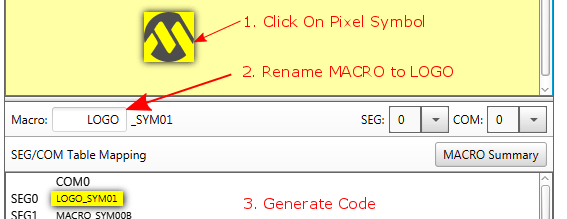
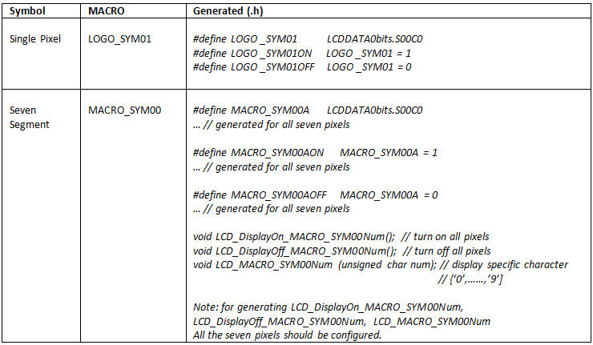
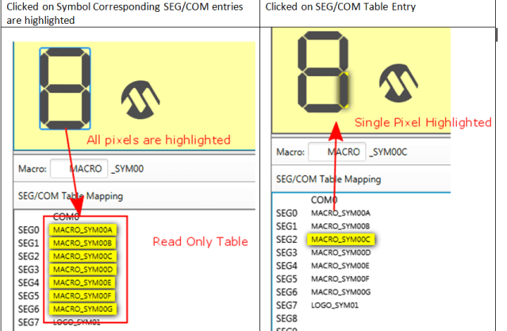
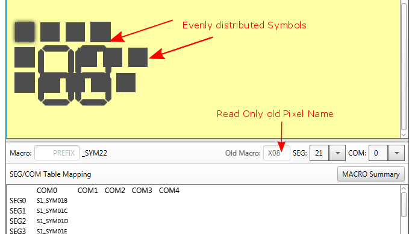

The details of each of controls is given below:
| Summary: | How to configure MACRO |
| Description: | Every symbol is associated with a macro. All symbols should have unique macro, as this is the #define constant that is generated in the output code. The GUI editor maintains uniqueness by appending _SYMXX. Only alphabets are allowed as macro. |
| Additional Information: |


|
| Availability: | Only when a symbol or pixel is selected |
| Summary: | The SEG/COM table is a read only table which shows visual summary for the configured Pixels. |
| Description: | It shows grouping of pixels with the symbol. If a pixel is clicked in the design panel corresponding Pixel is highlighted in the SEG/COM table. If a pixel group is clicked (Seven Segment Symbol) all the pixels corresponding to the symbol is highlighted. |
| Additional Information: |

|
| Availability: | Always available |
| Summary: | The new LCD GUI maintains a backward compatibility with the old LCD projects. |
| Description: | When the project is opened evenly distributed pixels and seven segments are drawn. The old pixel name (read only) is displayed under 'Old Macro' control. User can rename the new macro. To maintain backward compatibility with the old code, old macros are also generated as part of define. |
| Additional Information: |

|
| Availability: | Only available for projects which saved using older MCC version. |
| Summary: | These settings allow the user to set the general settings of the LCD module. |
| Description: | Select the multiplexing mode and the bias mode. According to the combination of the settings, the available commons and available pixels will be automatically calculated and displayed. |
| Additional Information: | |
| Availability: | The General Settings are always available. |
| Summary: | The pixels settings allow the user to configure the bias settings. |
| Description: | Select the appropriate bias settings. A set of bias pins are selectable. Also, an internal bias reference can be enabled. |
| Additional Information: | |
| Availability: | The Bias Setting are always available. |
| Summary: | The pixels settings allow the user to configure the power settings. |
| Description: | There are two reference ladders available. These are noted with A and B. A set of power settings are individually selectable for both of them. A reference ladder time is also available. |
| Additional Information: | |
| Availability: | The Power Settings are always available. |